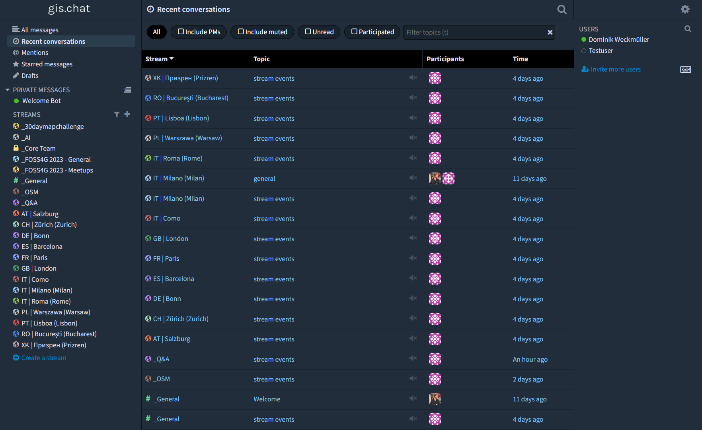

FOSS4G - 2023, Prizren, Kosovo
The largest global gathering for geospatial software
Image credit: https://2023.foss4g.org/
A place for anyone interested in geospatial topics such as
GIS, geo data science, earth observation, social sciences, climate change, urban planning, architecture... everyone is welcome!
An independent open source project based on Zulip hosted on Hetzner with 100% hydropower in Germany.
A geospatial chat in both senses: a platform about geospatial topics and a geospatial platform itself, referencing the location of our communities. Communicate your next meetups or simply get to know the spatial folks in your area! You can also use gis.chat as a normal forum about interesting topics, events or Q&A tool.
It's free, open source and you can even peak at some channels without account!
The largest global gathering for geospatial software
Image credit: https://2023.foss4g.org/
November's global mapping challenge
Image credit: https://30daymapchallenge.com/
Enabling geospatial through new methods
Image credit: https://github.com/opengeos/segment-geospatial
One of the world's largest open source communities
Image credit: https://www.openstreetmap.org/
The geospatial community is missing the geospatial!The platforms we use, may it be Messengers like WhatsApp/Signal/Telegram, social media networks like Twitter / Mastodon / Instagram / TikTok / LinkedIn etc. are great for building online communities, but they simply neglect our spatial nature. Sometimes it's nice to have someone physically around to show something locally, to ask for guidance or just have a coffee with.
{kind=link}
{kind=link}